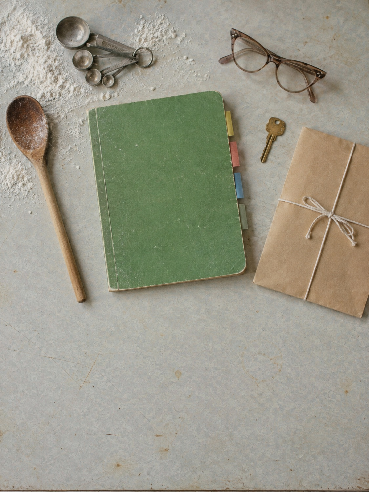
File copy · 57 recipes
The Spy’s
Cookbook
Recipes from the handwritten notebook of my grandmother, Dorothea Chilldon
eyes only
File copy
The Spy’s Cookbook
57 recipes from the handwritten notebook of Dorothea Delores Adams Chilldon, 1915–1997, and the loose cards and slips kept inside it
Mock-up edition · November 2026
About this file
How to read these recipes
Every recipe here was copied from a photograph of her own page. The words are hers. Abbreviations have been written out and the method broken into steps, and nothing else has been changed: no quantities filled in, no steps added.
She wrote for herself, so some recipes are a list and an oven temperature and no more. Those are printed as she left them.
Each recipe carries a small photograph of the original page, marked Exhibit. If the print and the handwriting ever disagree, the handwriting wins.
Marks you will see
a word like this is a reading we could not confirm. 11 of the 57 recipes have at least one. Check the exhibit before you cook.
illegible is a word that could not be read at all.
Oven temperatures are Fahrenheit. Measures are American cups and spoons.
Her shorthand
- c.
- cup
- tsp. / tbs.
- teaspoon / tablespoon
- oleo
- margarine
- soda
- baking soda
- gr.
- ground, granulated or green, by context
- com. sour cream
- commercial (bought) sour cream
- abt.
- about
- (6)
- a bare number at the end is how many it serves
- 〃
- ditto: same measure as the line above
The pictures
The photographs of finished dishes were made for this mock-up with an image generator, in the style of a 1960s cookbook plate. They show the kind of dish, not her own. The exhibits are real.
The clippings
Printed recipes she cut out and tucked in are listed at the back with her marks on them. They are not reprinted: those words belong to the papers and magazines they came from.
The cook
Dorothea Chilldon
- Name
- Dorothea Delores Adams Chilldon
- Born
- January 5, 1915, Blakely, Georgia
- Died
- February 25, 1997, Tampa General Hospital, Tampa, Florida, aged 82
- Home
- The Tampa area. The newspaper clippings in her notebook are from The Tampa Tribune.
- Service
- Records requested. Not yet received.
This space is held for her story.
Her service record goes here when it arrives, with a photograph of her and whatever the family wants said: where she served, what she would and would not say about it, and what was on the table when she came home.
Nothing about her service has been invented for this mock-up. Until the records come, the recipes are the record.
Index of files
Contents
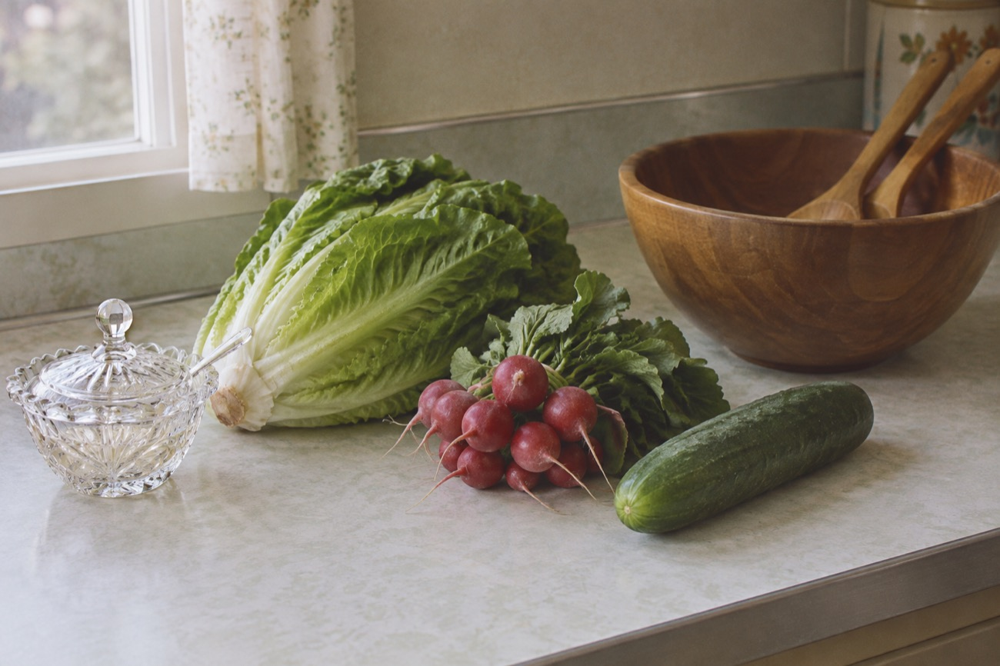
Section 01 of 07 · 14 recipes
Appetizers & Salads
- Caviar-Cream Cheese Spread6
- Grecian Green Salad7
- Salad Supreme (“Green Stuff”)8
- Spiced Peach Mold9
- Crunchy Salmon Salad10
- Chicken Fruit Salad11
- Tropical Chicken Boats for Two12
- Herbed Tomatoes13
- Sour Cream Potato Salad14
- Rice Salad15
- Hearts of Palm Salad16
- Tomato & Mozzarella Platter with Basil17
- Green Bean Salad18
- Easy Marinated Asparagus19
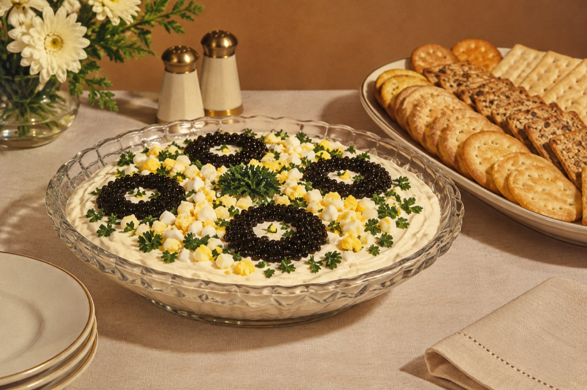
File 001Appetizers & SaladsNotebook, black ink
Caviar-Cream Cheese Spread
24 to 30 appetizers
Ingredients
- 2 (8 oz.) packages cream cheese, softened
- 1 (3 oz.) package cream cheese, softened
- 1 cup mayo
- 1 small onion, grated
- 1 tablespoon Worcestershire sauce
- 1 tablespoon lemon juice
- Dash of hot sauce
- 1 (3½ oz.) jar black caviar
- 4 hard cooked eggs, finely chopped
- 1 cup chopped fresh parsley
Method
- Beat cream cheese with an electric mixer until smooth. Add mayo, onion, Worcestershire sauce, lemon juice and hot sauce; beat well.
- Spoon cream cheese mixture into shallow serving dish; top with caviar, eggs and parsley.
- Serve spread with assorted crackers.
On the page
Her page is headed “Appetizers”, with a small star.
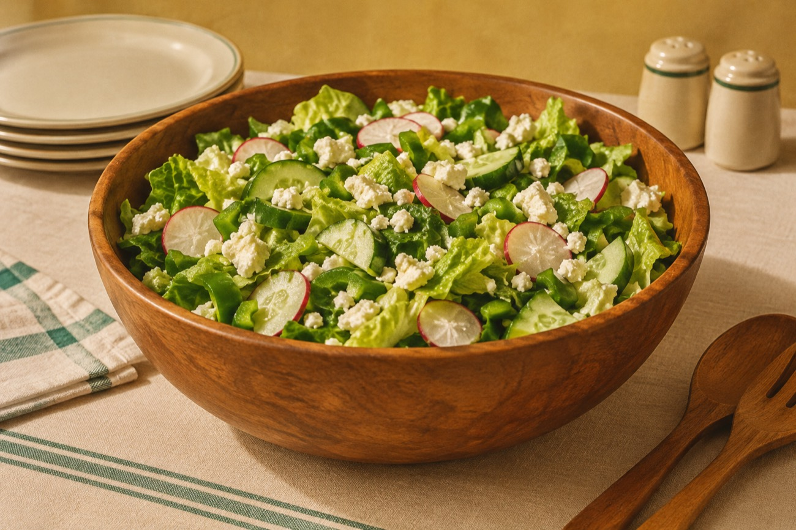
File 002Appetizers & SaladsNotebook, blue ink
Grecian Green Salad
Serves 10–12
Ingredients
- 2 large heads romaine lettuce, torn into bite size pieces
- 2 medium cucumbers, thinly sliced
- 2 green peppers, chopped
- 1 cup thinly sliced radishes
- ¾ cup crumbled feta cheese
- Olive oil dressing
Olive Oil Dressing
- ½ cup olive oil
- 3 tablespoons lemon juice
- ¼ teaspoon salt
- ¼ teaspoon pepper
Method
- Combine lettuce etc. Toss with olive oil dressing just before serving.
On the page
She drew a box around the dressing and gave it no method.
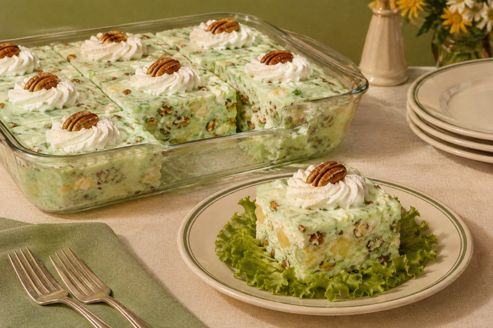
File 003Appetizers & SaladsNotebook, black ink
Salad Supreme (“Green Stuff”)
Ingredients
- large can of crushed pineapple
- water
- 6-ounce package of lime gelatin
- 1 cup cold water
- large package of cream cheese
- ½ cup chopped pecans
- ½ pint whipping cream
Method
- Drain large can of crushed pineapple, and measure juice; there should be about a cup. Add water to make 2 cups.
- Heat to boiling and dissolve a 6-ounce package of lime gelatin in the liquid. Add 1 cup cold water. Pour into oblong pan.
- Crumble a large package of cream cheese into the hot gelatin, using fork to mix in cream cheese until it has almost completely dissolved.
- Place in refrigerator until partially congealed. Remove and add pineapple and ½ cup chopped pecans.
- Beat ½ pint whipping cream until stiff. Carefully fold cream into gelatin.
- Return to refrigerator until congealed.
On the page
“Green Stuff” is her own subtitle.
The page is headed SALADS, in capitals.
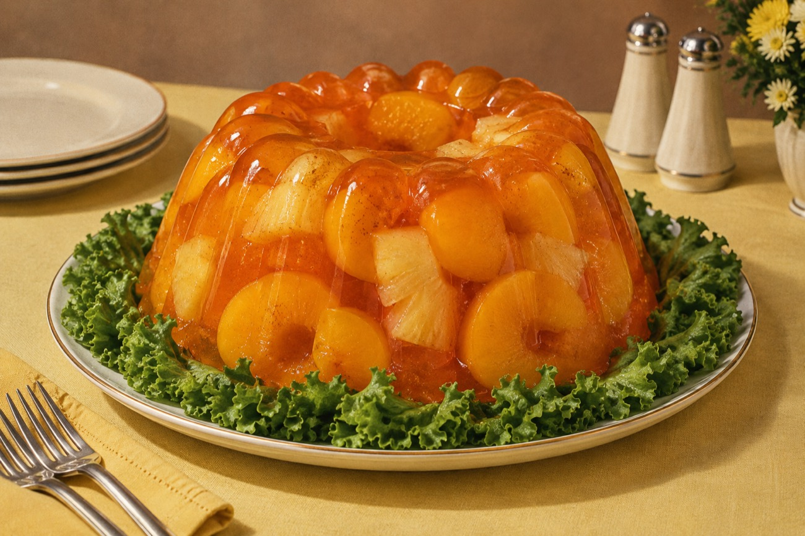
File 004Appetizers & SaladsNotebook, black ink
Spiced Peach Mold
10–12 servings
Ingredients
- 1 8 to 9 ounce can pineapple slices
- 1 1-pound 13-ounce jar spiced peaches
- 2 3-ounce packages orange-pineapple gelatin
- 2 tablespoons lemon juice
- ¼ teaspoon salt
- 2 7-ounce bottles (2 cups) ginger ale, chilled
Method
- Drain and halve pineapple slices. Drain peaches, reserving syrup. Remove pits.
- Add water to syrup to make 2 cups. In saucepan, combine peach syrup and gelatin; heat and stir until dissolved. Add lemon juice and salt. Chill till cold but not set.
- Pour ginger ale carefully into gelatin; stir with up-down motion.
- Pour about half the gelatin into a 6½ cup ring mold; chill both portions of gelatin till partially set.
- Arrange peaches and pineapple around mold, gently placing the fruits in the gelatin. Chill till almost firm.
- Cut remaining peaches and pineapple and fold into reserved gelatin.
- Pour carefully over gelatin and fruit in mold. Chill till set or overnight. Unmold on crisp greens.
On the page
“(Thanksgiving)” is written after the title.
She crossed out “juice” and wrote “syrup”.
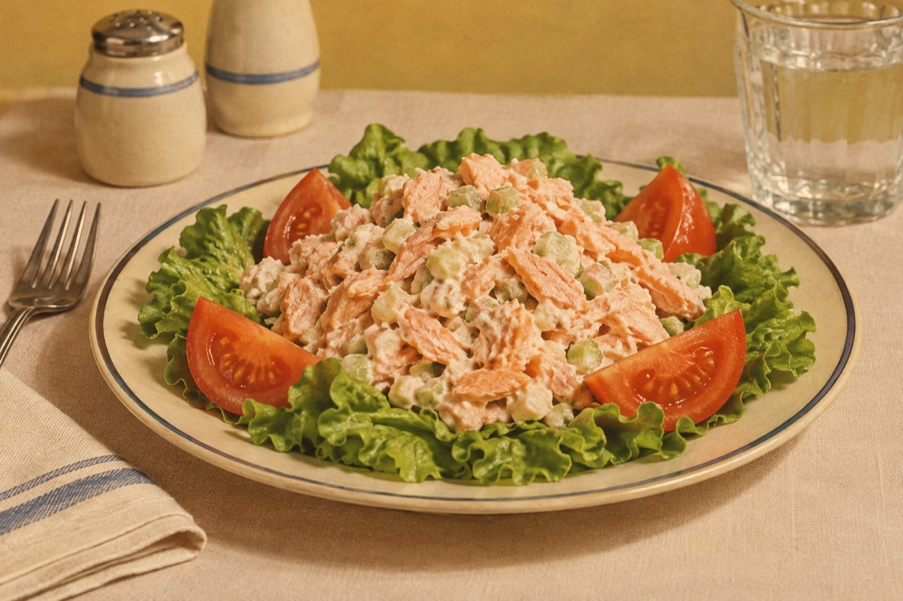
File 005Appetizers & SaladsNotebook, black ink
Crunchy Salmon Salad
Serves 6
Ingredients
- 1 15-ounce can red salmon
- 1 cup diced celery
- 2 tablespoons chopped sweet pickle
- 1 tablespoon chopped green pepper
- 1 teaspoon chopped fresh chives
- ½ cup mayonnaise
- 2 tablespoons lemon juice
- lettuce leaves, tomato wedges
Method
- Drain salmon, remove skin and bones; flake salmon with fork.
- Add celery, pickle, green pepper and chives; mix well. Combine mayo and lemon juice; add to salmon, stir well.
- Chill 2-3 hours, serve on lettuce leaves with tomato wedges.
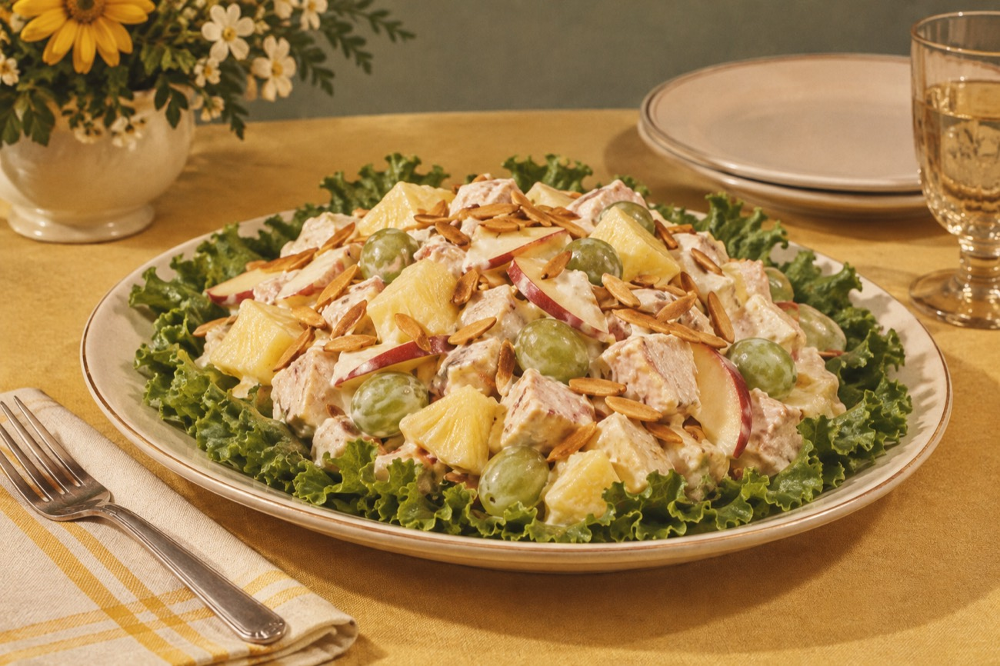
File 006Appetizers & SaladsNotebook, black ink
Chicken Fruit Salad
Ingredients
- 1 16-ounce can pineapple chunks
- 1 apple, cored and sliced
- 1 cup seedless grapes
- 3 cups diced cooked chicken
- Whipped Cream Fruit Dressing
- Lettuce
- ⅓ cup toasted slivered almonds
Whipped Cream Fruit Dressing
- 3 tablespoons butter or margarine
- 3 tablespoons all-purpose flour
- ¼ cup sugar
- ⅓ cup lemon juice
- ⅓ cup pineapple juice
- ½ cup whipping cream, whipped
Method
- Drain pineapple chunks, reserving juice. Dip apple slices in pineapple juice. Combine fruit and chicken; chill.
- Add Whipped Cream dressing, and toss lightly. Serve on lettuce, and top with almonds.
On the page
The “(?)” under the dressing is hers. The page gives no method for the dressing.
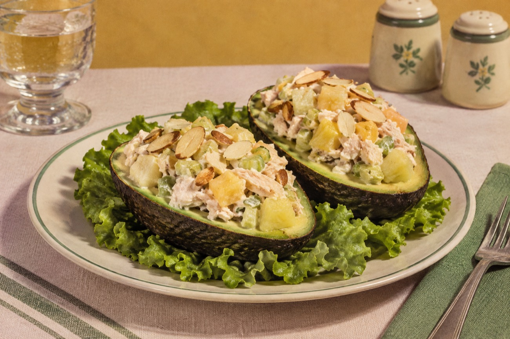
File 007Appetizers & SaladsNotebook, black ink
Tropical Chicken Boats for Two
Serves 2
Ingredients
- 1 (8-ounce) can pineapple chunks
- 1 cup cooked chicken
- ½ cup sliced almonds, toasted
- ¼ cup sour cream
- ½ cup chopped celery
- ½ teaspoon honey
- 1 large ripe avocado, peeled and halved
- Lettuce leaves
Method
- Drain pineapple, reserving ¼ cup juice. Combine pineapple, chicken, almonds and celery; mix well.
- Add sour cream, reserved pineapple juice, and honey; stir well.
- Fill avocado halves with chicken mixture. Arrange on lettuce leaves.
On the page
The 2 is circled.
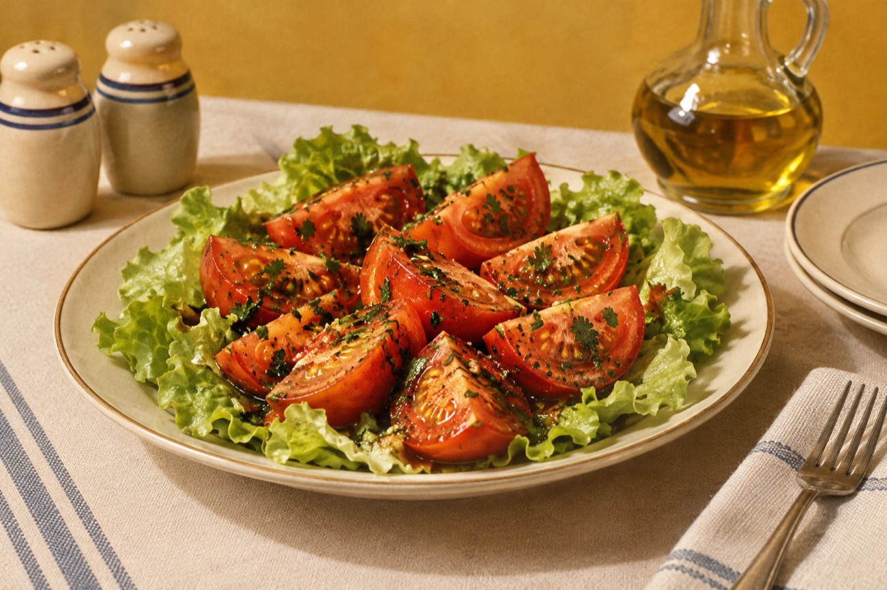
File 008Appetizers & SaladsNotebook, black ink
Herbed Tomatoes
Serves 6
Ingredients
- ⅔ cup salad oil
- ¼ cup vinegar
- Pinch of thyme
- ½ cup chopped parsley
- ½ cup chopped chives (or green onion tops)
- salt and pepper
- 6-7 tomatoes, quartered
- lettuce
Method
- Combine oil, vinegar and seasonings. Place tomatoes in shallow dish, add dressing; cover and refrigerate overnight.
- Remove tomatoes from dressing and serve on bed of lettuce. Spoon on small amount of dressing.
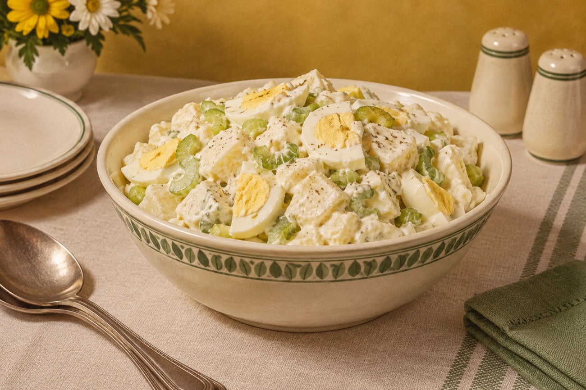
File 009Appetizers & SaladsNotebook, black ink
Sour Cream Potato Salad
Serves 6
Ingredients
- 4 to 4½ cups peeled and sliced potatoes
- 2 stalks celery, finely chopped
- 12 small radishes, thinly sliced
- 1 small onion, finely chopped
- 2 hard boiled eggs, sliced
- ½ cup sour cream
- ¾ cup mayo
- ½ teaspoon dill seeds
- 1¼ teaspoons prepared mustard
- 1½ teaspoons salt
- ½ teaspoon seasoned salt
Method
- Cook potatoes in boiling water for 10-15 minutes, or until tender. Drain; chill thoroughly.
- Combine potatoes, celery, radishes, onion and egg slices in large mixing bowl. Set aside.
- Combine remaining ingredients in a small bowl; mix well and pour over vegetables. Toss lightly.
On the page
On the egg line she crossed out “chopped” and wrote “sliced”.
Check the exhibit
Mustard reads 1¼ teaspoons and salt 1½. Either could be the plain fraction with a stray stroke in front.
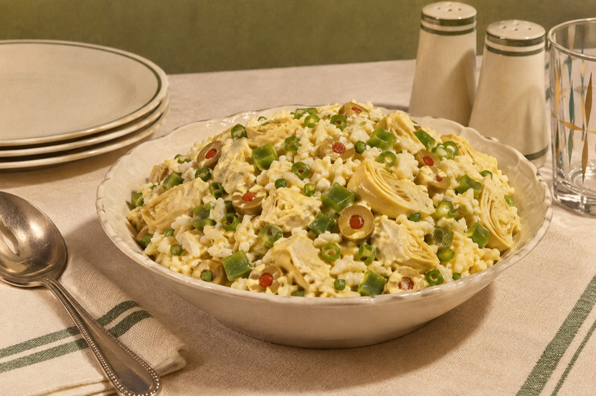
File 010Appetizers & SaladsNotebook, blue ink
Rice Salad
Ingredients
- 1 package chicken flavor Rice-a-Roni
- 2 cups water
- a little oil
- 2 jars drained artichoke hearts
- ⅓ cup mayo
- 1 teaspoon curry (or to taste)
- ½ green chopped pepper
- 3 or 4 green onions, chopped
- 6 green stuffed sliced olives
Method
- Cook Rice-a-Roni as directed except 2 cups water and no butter (a little oil).
- 2 jars drained artichoke hearts mixed with ⅓ cup mayo and 1 teaspoon curry (or to taste). Add above to cool rice.
- Add ½ green chopped pepper, 3 or 4 green onions, chopped, 6 green stuffed sliced olives.
On the page
Her aside at the end: “Can use sliced pimentos or a can of shrimp with this.”
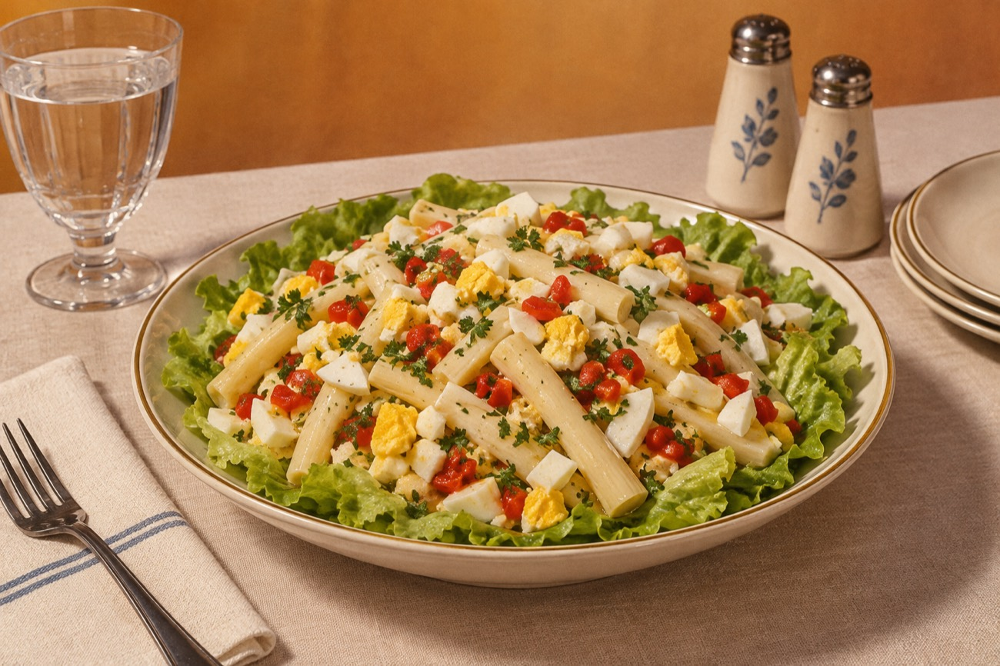
File 011Appetizers & SaladsNotebook, black ink
Hearts of Palm Salad
Serves 4
Ingredients
- ¼ cup salad oil
- 1 tablespoon finely chopped onion
- 1 tablespoon snipped parsley
- 1 tablespoon vinegar
- 1 teaspoon lemon juice
- ¼ teaspoon salt
- ⅛ teaspoon dry mustard
- 1 hard cooked egg, finely chopped
- 1 tablespoon chopped pimiento
- 1 14-ounce can hearts of palm, chilled, drained and cut in strips
Method
- In screw top jar, combine oil, onion, parsley, vinegar, lemon juice, salt and dry mustard. Cover, shake vigorously to blend.
- Add chopped egg and pimiento; stir well. Line salad plates with lettuce; top with hearts of palm. Pour on dressing.
On the page
Lettuce turns up in the method but not in her list.
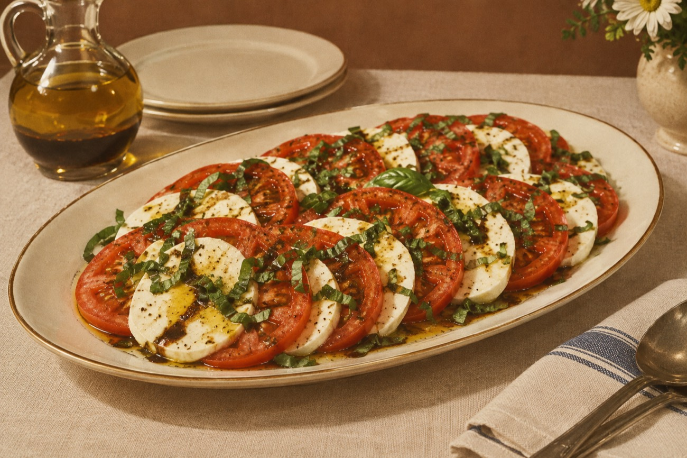
File 012Appetizers & SaladsNotebook, blue ink
Tomato & Mozzarella Platter with Basil
Serves 4
Ingredients
- ⅓ cup well seasoned bottled oil/vinegar dressing
- 1 tablespoon chopped fresh basil (or 1 teaspoon dried)
- 12 ounces mozzarella cheese, sliced
- 2 large tomatoes, sliced
- fresh basil leaves for garnish
Method
- Arrange tomatoes and cheese alternately on platter. Drizzle with dressing.
- Let stand in ’fridge 30 minutes or longer. Garnish.
On the page
Her title: “Tomato/Mozzarella Platter/Basil”. A red-tab page.
She never says when the basil goes on.
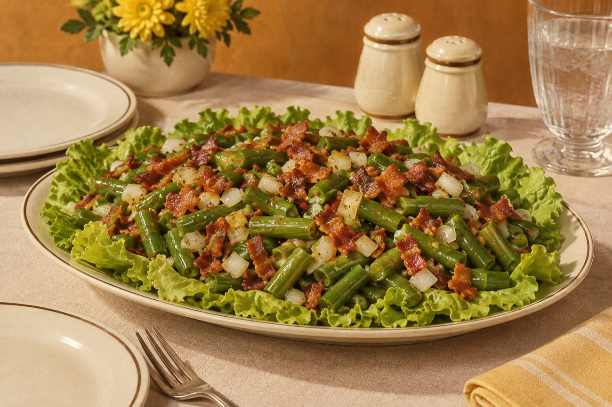
File 013Appetizers & SaladsNotebook, dark blue-black ink
Green Bean Salad
Serves 4
Ingredients
- 1 1-pound can cut green beans, drained
- 1 small sweet onion, diced (½ cup)
- ¼ cup bottled Italian dressing
- ½ teaspoon dried oregano leaves
- Lettuce leaves
- Bacon bits (optional)
Method
- In large bowl combine beans, onion, dressing and oregano. Toss gently. Serve on lettuce leaves.
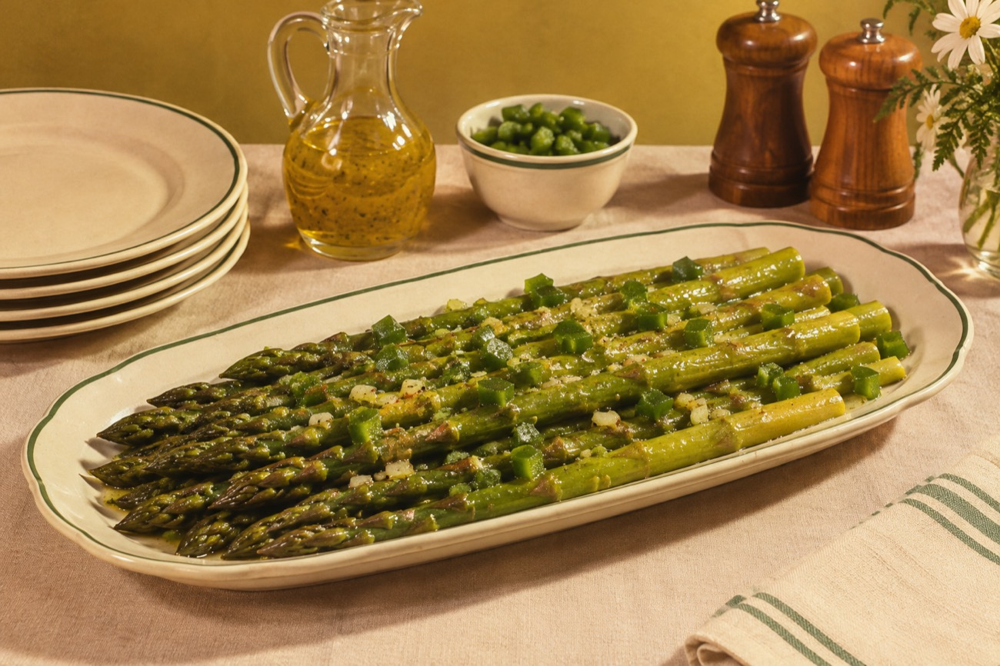
File 014Appetizers & SaladsNotebook, black ink
Easy Marinated Asparagus
Serves 6–8
Ingredients
- 2 (14½ oz.) cans asparagus spears, drained
- 1 green pepper, chopped
- 1 small bunch green onions with tops, chopped
- 1 stalk celery, chopped fine
- ¾ cup vegetable oil
- ½ cup red wine vinegar
- ½ cup sugar
- ½ clove garlic, minced
- ¼ teaspoon paprika
- Pimiento strips
Method
- Place asparagus in 13 x 9 x 2 inch baking dish. Combine next 8 ingredients; mix well and pour over asparagus. Chill 4 hours or overnight. Drain marinade before serving. Garnish with pimiento.
On the page
She wrote “(Salad)” at the top, though the page sits among the vegetables.
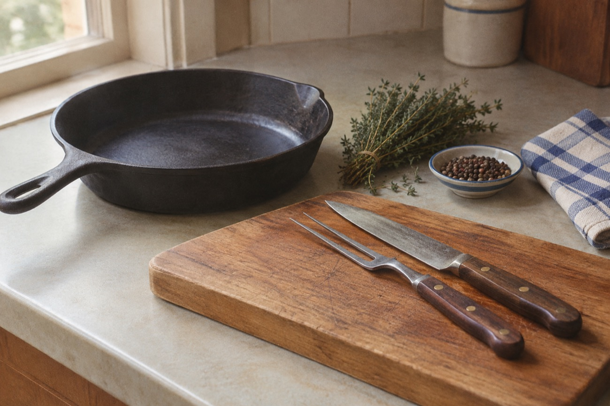
Section 02 of 07 · 4 recipes
Beef, Pork & Lamb
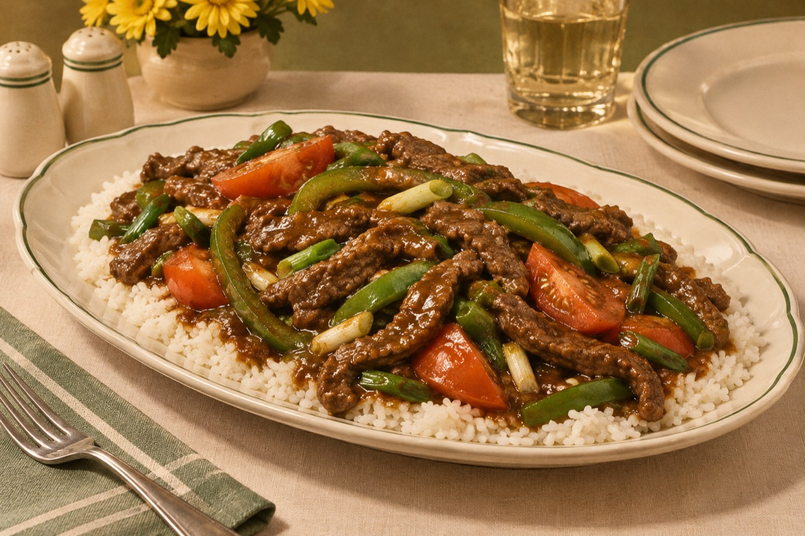
File 015Beef, Pork & LambNotebook, black ink
Pepper Steak / Rice
Serves 6
Ingredients
- 3 cups hot cooked rice
- 1 lb. lean beef round steak, ½" thick
- 1 tablespoon paprika
- 2 tablespoons butter or oleo
- 2 cloves garlic, crushed
- 1½ cups beef broth
- 1 cup sliced green onions
- 2 green peppers, strips
- 2 tablespoons cornstarch
- ¼ cup each water and soy sauce
- 2 large fresh tomatoes, cut ⅛’s
Method
- Pound steak to ¼“. Cut into ¼” wide strips. Sprinkle meat with paprika and let stand while preparing other ingredients.
- In large skillet, brown meat in butter. Add garlic and broth. Cover and simmer 30 min. Stir in onions and green peppers. Cover and cook 5 min. more.
- Blend cornstarch, water and soy sauce. Stir into meat mixture.
- Cook, stirring, until clear and thickened - about 2 min. Add tomatoes and stir. Serve over rice.
On the page
Headed “Beef”.
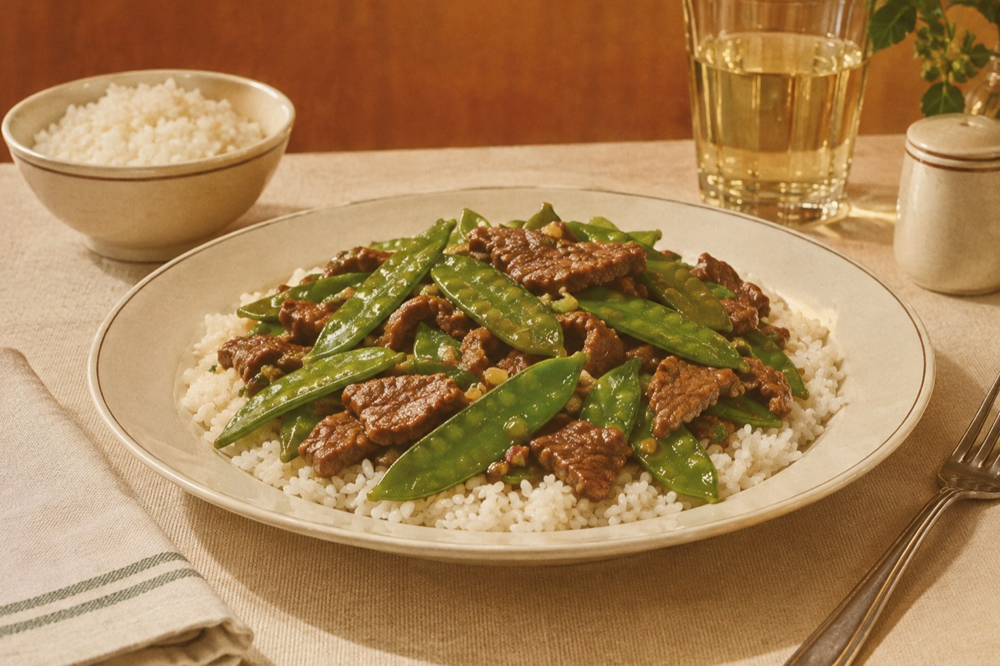
File 016Beef, Pork & LambNotebook, black ink
Oriental Beef & Snow Peas
Serves 4
Ingredients
- 1 pound boneless round steak
- 5 tablespoons soy sauce, divided
- 1 tablespoon sherry
- 4 teaspoons cornstarch
- ½ cup vegetable oil, divided
- 1 (6 oz.) package frozen snow peas
- 1 clove garlic, crushed
- ¾ teaspoon sugar
- Hot cooked rice
Method
- Partially freeze meat; cut into ¼" thick slices, 2″ long. Combine 1 tablespoon soy sauce, sherry and cornstarch; stir vigorously until cornstarch is dissolved. Coat beef with soy mixture.
- Heat oil (6 tablespoons) over high heat in wok or skillet. Add meat, and stir fry until meat is browned. Remove meat and set aside.
- Add remaining 2 tablespoons oil to wok; add snow peas and stir-fry over high heat 2 minutes.
- Add meat, garlic, remaining soy sauce and sugar to wok; cook until thickened and bubbly. Serve over hot rice.
On the page
Finished on the facing page.
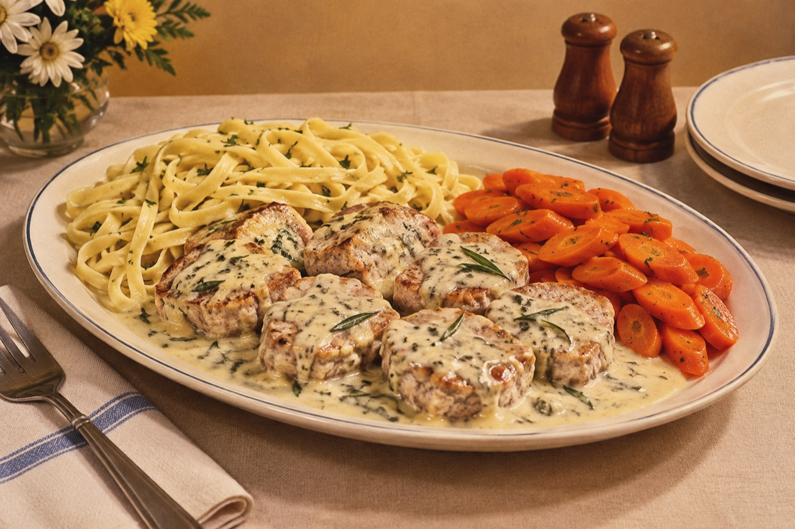
File 017Beef, Pork & LambNotebook, blue ink
Pork Medallions (Tarragon Sauce)
Ingredients
- 1½ lb. pork tenderloin cut in ½" thick slices and slightly flattened
- 1 tablespoon Dijon mustard
- 2 tablespoons butter
- ⅛ teaspoon salt
- ½ cup beef broth
- ½ cup half and half
- ½ teaspoon dried tarragon, crumbled
- Pepper to taste
Method
- Spread one side of meat slices with mustard. Melt butter in heavy skillet over medium heat. Add pork, mustard side down. Sprinkle with salt.
- Reduce heat to low and cook 5 min. on each side or until no longer pink.
- Remove pork to heated dish; keep warm. Add broth and tarragon to pan drippings, stirring.
- Simmer about 2 min. or until about ½ liquid remains. Add half and half.
- Simmer until sauce is slightly thickened. Pour over pork slices.
- Serve with fettucini; sliced cooked carrots.
On the page
The half and half was added afterwards, squeezed between two lines with an arrow.
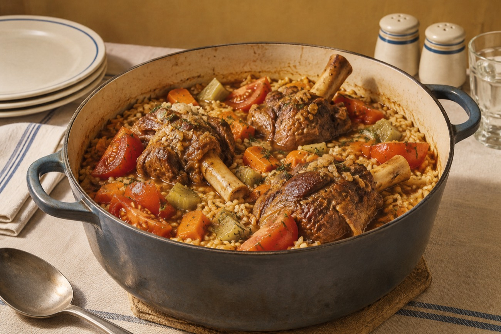
File 018Beef, Pork & LambNotebook, black ink
Lamb Shanks Dinner
Ingredients
- 2 tablespoons oil
- 4 lamb shanks
- 1 carrot, chopped
- 1 small onion, chopped
- 1 rib celery, chopped
- Salt and pepper
- ¼ teaspoon thyme or oregano
- 1½ cups chicken broth or water
- ¾ cup rice
- 2 ripe tomatoes, quartered
Method
- Heat oil in heavy pot. Brown lamb on all sides; remove from pan.
- Add celery, carrot and onion, turn to glaze in fat, then return lamb to pan.
- Add seasonings and broth, cover and cook until lamb is tender, about 1 hour.
- Add rice, raising lamb so that rice is submerged in liquid (add more broth if necessary to cover rice by 1″).
- Add tomatoes and simmer about 30 min.
On the page
“30 min.” is squeezed in above the last line of the page.
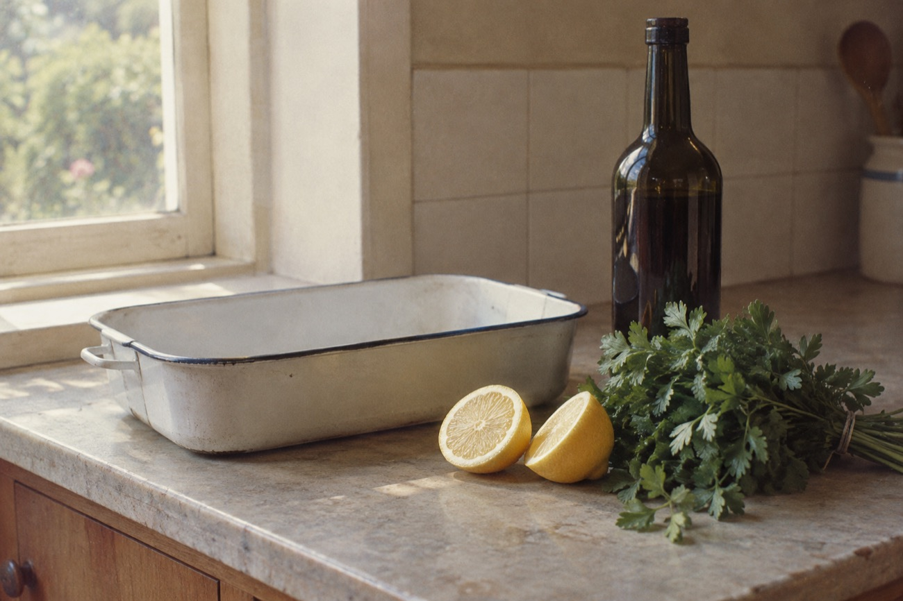
Section 03 of 07 · 6 recipes
Chicken & Fish
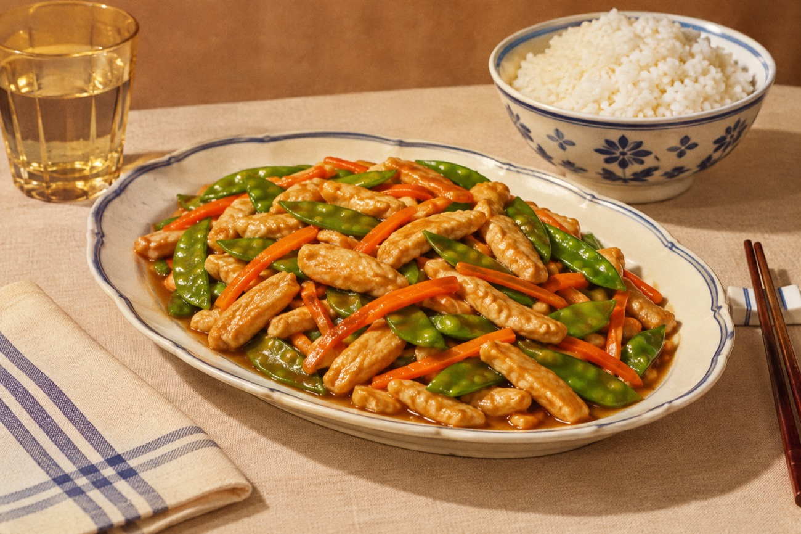
File 019Chicken & FishNotebook, black ink
Szechuan Chicken
Serves 6
Ingredients
- ¼ cup vegetable oil
- 2 cloves garlic
- 2 chicken breasts, boned and skinned, cut into thin strips
- ¼ cup soy sauce
- 2 tablespoons dry sherry
- 1 teaspoon sugar
- 1 teaspoon cornstarch
- ¾ teaspoon ground ginger
- ½ teaspoon pepper sauce
- 2 cups julienne carrots
- 1 package snow peas, thawed and drained
- Cooked rice
Method
- Heat oil over high heat in wok or skillet. Add garlic, saute one minute.
- Add chicken; stir fry until pieces turn white. Combine soy sauce, sherry, sugar, cornstarch, ginger and pepper sauce. Add to wok with carrots. Stir fry 3 min.
- Add snow peas; stir fry 2 min. longer. Serve with hot rice.
On the page
Headed “Chicken”.
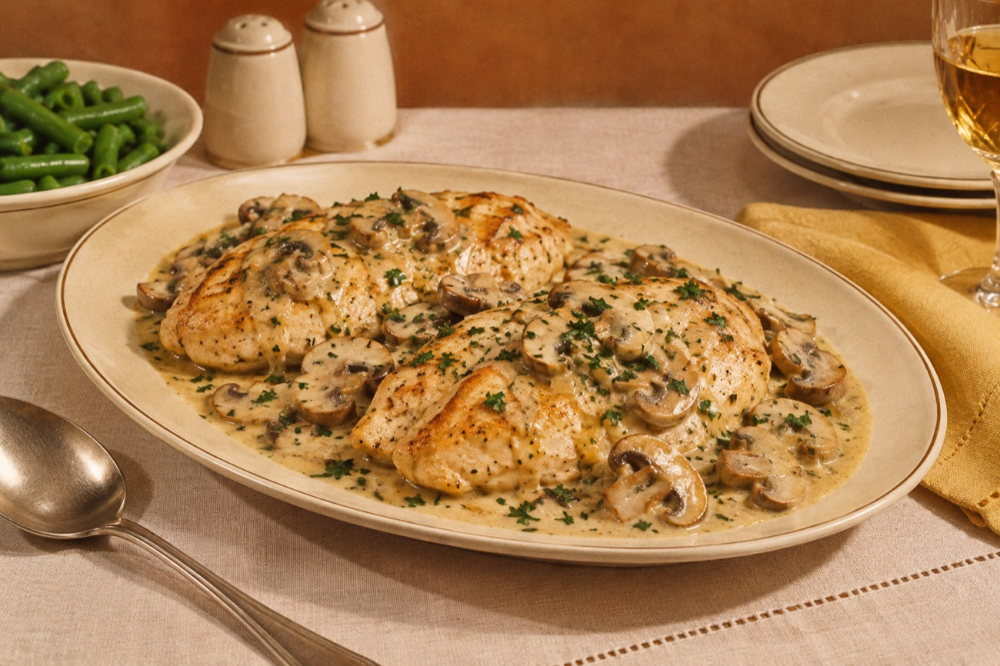
File 020Chicken & FishNotebook, black ink with red underlining
Chicken Supremes with Sherry Sauce
Serves 6
Ingredients
- 3 boneless whole chicken breasts
- ½ teaspoon crumbled leaf thyme
- ½ teaspoon salt
- ¼ teaspoon pepper
- 3 tablespoons butter or margarine
- ¼ pound sliced fresh mushrooms
- 1 tablespoon butter
- One 1-oz. packet sherry-wine sauce mix
- 1 cup light cream or milk
- ¼ cup chopped parsley
- Parsley (garnish)
Method
- Cut 3 boneless whole chicken breasts in half. Each half is a “supreme”.
- Rub ½ teaspoon crumbled leaf thyme, ½ teaspoon salt and ¼ teaspoon pepper into chicken.
- Melt 3 tablespoons butter or margarine in large skillet. Saute chicken just until done, turning once, about 10 min. Remove to heated serving platter.
- Saute ¼ pound sliced fresh mushrooms in 1 tablespoon butter 3 minutes, or until mushrooms begin to brown.
- Add one 1-oz. packet sherry-wine sauce mix; stir in 1 cup light cream or milk until smooth; cook until thickened, about 3 min.; add ¼ cup chopped parsley; pour over chicken. Garnish with parsley.
On the page
She wrote this one as a single paragraph and underlined the quantities in red. The ingredient list was pulled out of it.
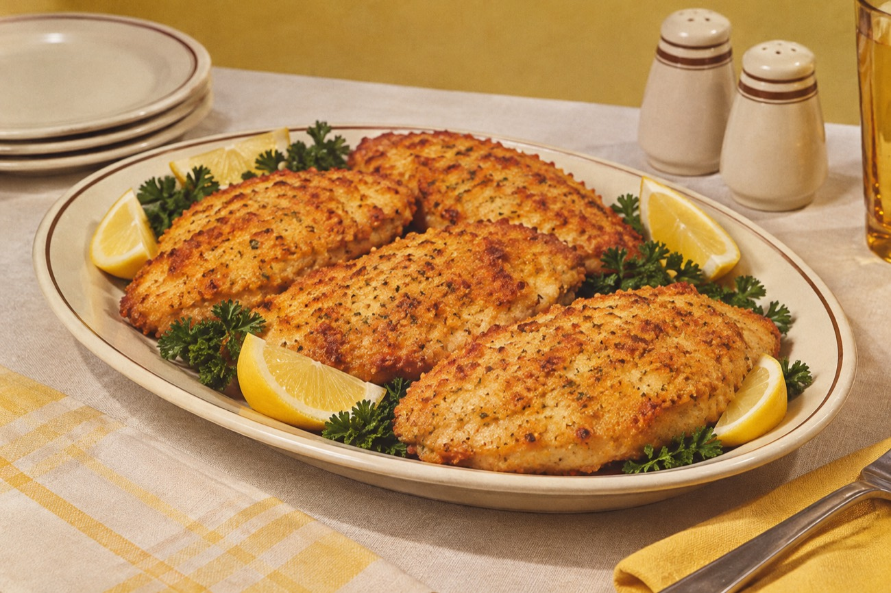
File 021Chicken & FishNotebook, blue ink
Fried Chicken Breasts
Ingredients
- 4 whole chicken breasts, halved, boned and skinned
- ¼ cup flour
- 2 eggs, well beaten
- 1¼ cups Italian bread crumbs
- 3 tablespoons corn oil
- 3 tablespoons corn oil margarine
Method
- Pound chicken breasts to flatten. Dust lightly with flour. Dip into egg, then bread crumbs. Chill chicken 30 min.
- Heat oil and cook chicken about 5 min. on each side until golden brown and crisp.
On the page
She crossed out the Accent in pencil, in the list and in the method.
Check the exhibit
The margarine line uses ditto marks under “corn oil”. It may mean plain margarine.
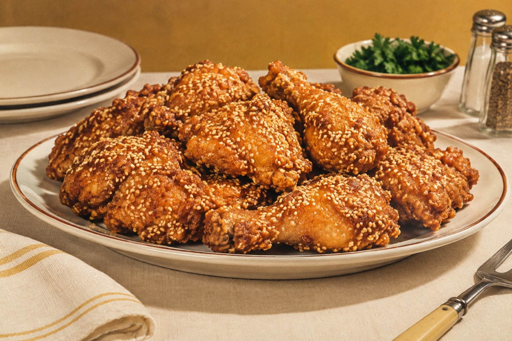
File 022Chicken & FishNotebook, black ink
Sesame Chicken
Serves 6
Ingredients
- 1 egg, beaten
- ¼ cup milk
- ½ cup fine dry breadcrumbs
- ¼ cup sesame seeds
- ¾ teaspoon salt
- ¼ teaspoon pepper
- 3 whole chicken breasts, skinned and boned
- ½ cup flour
- Vegetable oil
Method
- Combine egg and milk; stir well. Combine breadcrumbs, sesame seeds, salt and pepper, stirring well.
- Dredge chicken in flour; dip in egg mixture, and dredge in bread crumbs.
- Heat 1″ of oil in large skillet to 325°. Add chicken and fry 5 minutes on each side. Drain on paper towels.
Check the exhibit
The oil temperature reads 325°. The middle digit is loosely written and could be a 7.
File 023Chicken & FishNotebook, black ink
Grecian Baked Cod
Serves 6
Ingredients
- 2 lbs. frozen cod
- 2 cups sliced onion
- 2 cloves garlic, minced
- ½ cup chopped parsley
- ¼ cup dry white wine
- 2 tablespoons lemon juice
- 2 tablespoons olive oil
- 1½ teaspoons salt
- ½ teaspoon oregano
- ¼ teaspoon pepper
- 2 medium tomatoes, sliced
Method
- Thaw frozen fillets. Place onion, garlic and parsley in even layer over bottom of shallow 2 qt. baking dish. Arrange fish on vegetables.
- Add wine, lemon juice and olive oil. Sprinkle with ½ of the salt, oregano and pepper. Arrange tomato slices on top.
- Bake in oven at 350° for 35-40 min. or until fish flakes. Baste with pan juices.
On the page
Headed “Fish”, underlined twice.
The method uses half the salt, oregano and pepper and never says where the rest goes.
File 024Chicken & FishNotebook, black ink
Hot Chicken Salad (Country-Club style)
6–8 servings
Ingredients
- 4 cups chopped cooked chicken
- 2 cups chopped celery
- 4 hard-cooked eggs, chopped
- 1 2 oz. jar diced pimiento, drained
- 1 tablespoon finely chopped onion
- 1 cup mayo.
- 2 tablespoons lemon juice
- ¾ teaspoon salt
- 1 cup (4 oz.) shredded cheddar cheese
- ⅔ cup sliced almonds, toasted
Method
- Combine first 8 ingredients; mix well. Spoon into lightly greased 12 x 8 x 2 inch baking dish; cover and bake at 350° for 20 min.
- Sprinkle cheese over casserole; top with almonds. Bake uncovered an additional 3 min. or until cheese melts.
On the page
She wrote “Spoon lightly into greased” and then drew arrows to swap the words.
Check the exhibit
“An additional 3 min.” could be 5.
Section 04 of 07 · 9 recipes
Vegetables & Breads
File 025Vegetables & BreadsNotebook, black ink
Zesty Broccoli Casserole
6–8 servings
Ingredients
- 2 10 oz. packages frozen chopped broccoli
- 1 10 oz. can cream of mushroom soup, undiluted
- 1½ cups shredded Cheddar cheese
- 1 egg, beaten
- ¼ cup milk
- ¼ cup mayonnaise
- 1 tablespoon horseradish
- 2 tablespoons melted butter or margarine
- ¼ cup cracker crumbs
Method
- Cook broccoli per package directions; drain. Combine soup, cheese, egg, milk, mayo, and horseradish; stir into broccoli.
- Spoon into greased 2 quart casserole. Combine melted butter and cracker crumbs; sprinkle over broccoli mixture. Bake 350° - 45 minutes.
On the page
Headed “Vegetables”.
File 026Vegetables & BreadsNotebook, black ink
Corn Fritters
Serves 6
Ingredients
- Salad oil
- 1 16 oz. can whole kernel corn, drained
- 1 cup all-purpose flour
- 1 teaspoon double acting baking powder
- ¾ teaspoon salt
- 2 eggs
- ¼ cup milk
- Maple-blended syrup, or confectioners’ sugar
Method
- About 30 min. before serving: Heat ½" salad oil in skillet.
- In medium bowl, with fork, stir 1 tablespoon oil and next 6 ingredients just until blended.
- Drop batter by heaping spoonfuls into hot oil; fry 3 to 5 min. until browned, turning once.
- With slotted spoon, remove fritters to paper towels; drain. Serve with syrup or sprinkled sugar.
File 027Vegetables & BreadsNotebook, blue ink
Corn Pudding
Serves 4–6
Ingredients
- 1 tablespoon melted butter or margarine
- 2 eggs
- 2 tablespoons sugar
- 1 teaspoon salt
- ¼ cup flour
- 2 cups milk
- 2 7 oz. cans whole kernel corn, drained
Method
- Place butter in a 1½ qt. casserole. Combine eggs, sugar, salt and flour, mixing well. Gradually stir in milk. Add corn, mix well.
- Pour mixture into casserole, cover and bake at 350° for 45 min.
- Since pudding will thicken at the bottom during baking, stir several times during first 30 min. by lifting from the bottom.
- Remove cover and continue baking 15 min. or until golden.
On the page
A red-tab page.
File 028Vegetables & BreadsNotebook, blue ink
Ratatouille
Ingredients
Put into deep skillet or heavy casserole
- ⅓ cup olive oil
- ¾ cup thinly sliced onions
- 2 cloves garlic
Combine in layers with
- 4 julienne green peppers
- 2½ cups peeled, diced eggplant
- 3 cups zucchini in ¼" slices
- 2 cups peeled, quartered tomatoes
Add to each layer
- salt and pepper
Method
- Put into deep skillet or heavy casserole: ⅓ cup olive oil, ¾ cup thinly sliced onions, 2 cloves garlic.
- Remove the onions and garlic from casserole and combine in layers with: 4 julienne green peppers, 2½ cups peeled, diced eggplant, 3 cups zucchini in ¼" slices, 2 cups peeled, quartered tomatoes.
- Add to each layer salt and pepper. Sprinkle with olive oil. Simmer covered over very low heat 35-40 min.
- Uncover and continue cooking to reduce amount of liquid.
On the page
List and method run together on her page, the way she would say it.
There is no step for cooking the onions and garlic before she takes them out.
Check the exhibit
The zucchini slices read ¼ inch and could be ½.
File 029Vegetables & BreadsNotebook, blue ink
Easy Corn Casserole
Serves 4
Ingredients
- 1 can white corn (15 oz.)
- 1 cup grated cheddar cheese
- 1 tablespoon flour
- 1 cup milk
- 2 tablespoons butter
- 1 cup bread crumbs
- 2 eggs
Method
- Oven 425°. Beat eggs and mix with rest of ingredients. Pour into greased casserole. 35 min.
Check the exhibit
The oven reads 425°, and clearly. That is hot for this dish, so look at the exhibit.
File 030Vegetables & BreadsNotebook, black ink
Coconut-Orange Sweet Potatoes
Serves 10 to 12
Ingredients
- 4 (17 oz.) cans sweet potatoes, drained and mashed
- 4 eggs
- 1 cup firmly packed brown sugar
- ¼ cup butter or margarine, melted
- ¾ teaspoon salt
- ½ teaspoon ground cinnamon
- 3 tablespoons rum
- 1 cup chopped pecans
- 1 cup flaked coconut
- 2 tablespoons butter, melted
- Orange slices
Method
- Combine first 7 ingredients; beat with electric mixer 1-2 min. or until light and fluffy.
- Stir in pecans; spoon into greased 2½ qt. casserole. Bake at 325° for about 35 min.
- Combine coconut and 2 tablespoons butter, stirring well. Sprinkle around edge of casserole; top with orange slices and bake additional 10 min.
On the page
“(Thanksgiving + Christmas)” is written under the title and circled.
Check the exhibit
The cans read 17 oz. The 7 could be a 2.
File 031Vegetables & BreadsNotebook, black ink
Green Beans with Almonds
8–10 servings
Ingredients
- 2 pounds fresh green beans
- 2 quarts water
- 1 teaspoon salt
- ¼ cup butter or margarine
- Salt and pepper to taste
- ⅔ cup sliced almonds, toasted
Method
- Wash beans; trim end and remove strings. Cut diagonally into 3-inch pieces.
- Combine water and 1 teaspoon salt, and bring to boil. Add beans. Cook uncovered 4 to 5 minutes, or until just tender.
- Drain beans, and plunge into cold water; drain again. Melt butter in large skillet; add beans, and saute 2 to 3 minutes until thoroughly heated.
- Sprinkle with salt, pepper and almonds.
File 032Vegetables & BreadsNotebook, black ink
Fruit & Pecan Dressing (for Turkey)
10–12 servings
Ingredients
- 2 cups water
- ½ cup butter or oleo
- 2 8 oz. packages herb-seasoned stuffing mix
- 2 large apples, unpeeled, cored and minced
- 1 cup chopped pecans
- ½ cup raisins or currants
- 2 tablespoons grated orange peel
- Fresh parsley (optional)
- Cherry tomatoes (optional)
Method
- Combine water and butter in a large Dutch oven; heat until butter melts. Stir in next five ingredients.
- Spoon into lightly greased 13 x 9 x 2″ baking dish. Bake at 350° - 30 min.
- Garnish with parsley and cherry tomatoes, if desired.
On the page
Headed “Miscellaneous”.
File 033Vegetables & BreadsNotebook, black ink
Hoecake
Ingredients
- 2 cups cornmeal
- ½ teaspoon salt
- ½ teaspoon baking powder
- 1 tablespoon melted fat
- water
Method
- Combine 2 cups cornmeal and salt and baking powder. Add fat and stir in water to make a soft dough.
- Shape into small cakes about ½" thick and bake on hot greased griddle until brown. Turn to brown other side.
On the page
Headed “Breads”.
No quantity for the water. The 2 in the baking powder line is written over an earlier figure.
Section 05 of 07 · 5 recipes
Main Dish
File 034Main DishNotebook, black ink
Welsh Rabbit
Serves 2
Ingredients
- 1 tablespoon butter
- 1 tablespoon flour
- ½ cup hot milk
- 8 oz. grated sharp cheddar cheese
- 2 drops Tabasco
- 1 teaspoon Worcestershire
- 1 teaspoon paprika
- 1 teaspoon hot prepared mustard
- ½ cup beer
- 1 egg yolk, beaten (optional)
Method
- Make cream sauce by melting butter in small pan and stirring in flour.
- Cook over medium heat and stir constantly as mixture bubbles. Do not let it brown.
- After a minute or so, slowly pour in hot milk, continuing to stir.
- Bring to boil, lower heat and simmer, stirring 2 more minutes. Remove from heat.
- Melt cheese in top of double boiler. Stir in cream sauce until blended, then mix in all remaining ingredients.
- Cook over boiling water, stir constantly for 5 min. (This will be thin.)
- If thicker rabbit is desired, stir in one beaten egg yolk and cook over hot water 2 more minutes. Pour over toast.
On the page
Rabbit, not rarebit, both times she writes it.
She underlined “thin”.
File 035Main DishNotebook, black ink
Pasta Prima Vera
6 servings
Ingredients
- 1 package broccoli
- 2 small zucchini
- 1 package linguini (1 lb.)
- 1 large clove garlic, chopped
- 1 basket cherry tomatoes (or 2 large tomatoes, cut into eighths)
- ¼ cup olive oil
- ¼ cup chopped fresh basil, or 1 teaspoon leaf basil, crumbled
- ½ lb. fresh mushrooms, sliced
- ½ cup frozen green peas (optional)
- ¼ cup chopped parsley
- 1½ teaspoons salt
- ¼ teaspoon pepper
- ¼ teaspoon crushed red pepper (optional)
- ¼ cup (½ stick) butter or margarine
- ¾ cup heavy cream
- ⅔ cup Parmesan cheese, grated
Method
- Cook broccoli re directions; then cut into small pieces. Cook zucchini in very small amount of water; drain. Put in large bowl. Cook and drain linguini.
- Saute garlic and tomatoes in oil about 2 minutes. Stir in basil and mushrooms; cook about 3 min. Stir in peas, parsley, salt and pepper. Add mixture to vegetables in bowl.
- Melt butter in same skillet; stir in cream and cheese. Cook over medium heat, stirring constantly until smooth. Add linguini, toss to coat. Stir in vegetables; heat gently until hot!
On the page
Headed “Main Dish”. “Prima Vera” is two words in her hand.
The crushed red pepper is in her list and not in her method.
File 036Main DishNotebook, blue ink
Pesto Sauce for Spaghetti
Ingredients
- ⅓ cup olive oil
- ¼ cup grated Parmesan cheese
- ¼ cup chopped parsley
- 2 tablespoons basil
- 1 teaspoon salt
- ¼ teaspoon nutmeg
- 1 small garlic clove, quartered
Method
- Just before serving: In blender container place all ingredients; cover and blend at medium speed until well mixed.
- ½ cup enough for six servings of spaghetti.
On the page
For the basil she wrote “tsp.”, crossed it out and wrote “tbs.”
File 037Main DishNotebook, blue ink
White Clam Sauce
Serves 4
Ingredients
- 3 cans minced clams
- ¼ cup olive or salad oil
- 1 clove garlic
- ¾ cup chopped parsley
- 2 tablespoons white wine
- 1 teaspoon basil
- ½ teaspoon salt
Method
- Drain juice from clams, reserving juice. In medium pan over medium heat, in hot oil cook garlic till tender.
- Stir in clam juice and remaining ingredients, except clams. Cook 10 min.
- Stir in clams; cook just until clams are heated thru.
On the page
No can size is given for the clams.
File 038Main DishNotebook, blue ink with pencil brackets and underlining
Sophia Loren’s Pasta alla Putanesca
Serves 4
Ingredients
- ½ cup olive oil
- 1 small onion, chopped
- 3 garlic cloves
- 1 can (14 oz.) plum tomatoes, drained and quartered
- 3 anchovies, minced
- 1 teaspoon drained capers
- ½ cup pitted Italian ripe olives
- ½ teaspoon crushed red pepper flakes
- ⅛ teaspoon salt
- ⅛ teaspoon oregano
- 1 lb. pasta
- 3 tablespoons Parmesan cheese
Method
- Heat oil in skillet. Add onion and garlic; saute until golden.
- Remove garlic; add tomatoes, anchovies and capers. Cook covered over medium heat 15 min.
- Add olives, pepper flakes, salt and oregano; cook 5 min. Cook pasta, drain.
- Toss pasta with sauce, add cheese and toss again. Serve at once.
On the page
Credited in her title to Sophia Loren, and spelled her way.
Pencil brackets mark the anchovies and the olives. This is the entree on one of her dinner menus at the back of the book.
Section 06 of 07 · 14 recipes
Cakes & Sweets
File 039Cakes & SweetsNotebook, black ink
Ginger Pound Cake
Ingredients
- 1 cup butter or oleo
- 1 cup sugar
- 2 cups all-purpose flour
- 2 teaspoons ground ginger
- 5 eggs, slightly beaten
- 1 cup light molasses (mild)
- ½ cup sour cream
- ½ teaspoon soda
- 2 teaspoons warm water
- powdered sugar
Method
- Combine butter and sugar; cream until fluffy. Combine flour and ginger, add to creamed mixture, blend well.
- Dissolve soda in water, add to batter, mix well. Pour batter into greased and floured 10″ tube pan, 325° - one hour, or until done. Cool 10 min. before removing. Sprinkle sugar.
On the page
The first page of the notebook.
Her method never says when the eggs, molasses and sour cream go in.
File 040Cakes & SweetsNotebook, black ink
Rum Cake
Ingredients
- 1 cup chopped pecans
- 1 18½ oz. package yellow cake mix
- 1 3¾ oz. Jello Instant vanilla pudding mix
- 4 eggs
- ½ cup cold water
- ½ cup vegetable oil
- ½ cup dark rum
Glaze
- ¼ lb. butter
- ¼ cup water
- 1 cup granulated sugar
- ½ cup rum
Method
- Oven: 325°. Grease and flour 10″ tube pan. Sprinkle nuts over bottom of pan. Mix all ingredients. Pour batter over nuts. Bake 1 hour. Cool. Invert on serving plate. Prick top.
- Drizzle and smooth glaze over top and sides. Repeat glaze. Glaze: Melt butter in saucepan. Stir in water and sugar. Boil 5 min. stirring constantly. Remove from heat - stir in rum.
On the page
She underlined “Inst.” in the pudding mix line.
File 041Cakes & SweetsNotebook, black ink
Mrs. Harvey’s White Fruit Cake
Makes a 5 lb. cake
Ingredients
- 5 large eggs
- ½ lb. butter
- 1 cup granulated sugar
- 1¾ cups regular flour
- ½ teaspoon baking powder
- ¾ lb. candied cherries
- 1 pound candied pineapple
- 4 cups chopped pecans
- ½ oz. vanilla extract
- ½ oz. lemon extract
Method
- Chop nuts and fruits into medium size pieces; dredge with ¼ cup of the flour.
- Cream butter and sugar until light and fluffy. Add well-beaten eggs, blend well.
- Sift remaining flour and baking powder together; fold into egg and butter mixture.
- Add vanilla and lemon extracts; mix well; then add fruits and nuts, blend well.
- Grease 10″ tube pan, line with paper and grease again. Pour batter into pan.
- Place in cold oven and bake at 250° for 3 hrs. Cool in pan on cake rack. (Makes 5 lbs. cake.)
On the page
Credited in her title to Mrs. Harvey.
She underlined “cold” in “Place in cold oven”.
File 042Cakes & SweetsNotebook, black ink
Crunchy Chocolate Bars
36 pieces
Ingredients
- 1 12 oz. package semi-sweet chocolate pieces
- ¾ cup crunch style peanut butter
- 3 cups round oat cereal
Method
- Combine chocolate pieces and peanut butter. Cook over low heat, stirring frequently, til melted and smooth. Remove from heat; stir in cereal.
- Turn into waxed-paper lined 8x8x2″ bake pan; chill and cut into bars, or drop by teaspoonfuls onto waxed paper. (36 pcs.)
File 043Cakes & SweetsNotebook, black ink
Cherry Ambrosia
Serves 4–6
Ingredients
- 1 30 oz. can dark, sweet pitted cherries
- 1 cup commercial sour cream
- 2 tablespoons apricot jam
- 2 tablespoons chopped toasted almonds
- ¼ cup toasted flaked coconut
Method
- Drain cherries and place on absorbent paper to dry. In bowl thoroughly combine sour cream, jam and almonds. Carefully fold in cherries. Sprinkle coconut over top. Chill 30 minutes. Serves 4-6.
On the page
Shares its page with Festive Fruit Bowl.
File 044Cakes & SweetsNotebook, black ink
Festive Fruit Bowl
Serves 4
Ingredients
- 1 10 oz. package frozen mixed fruits, thawed
- 1 1 lb. can or fresh orange and grapefruit sections
- 1 large banana, sliced
- 2 tablespoons dry white wine
Method
- Combine all ingredients in bowl. Chill 30 min. Serves 4.
On the page
Shares its page with Cherry Ambrosia. She underlined “fresh”.
File 045Cakes & SweetsNotebook, black ink
Chocolate Fudgies
Ingredients
- ½ stick butter
- 12 oz. package semi-sweet chocolate bits
- 1 teaspoon vanilla
- 15 oz. can condensed milk
- 1 cup flour
- 8 oz. (1 cup) chopped pecans
Method
- Melt in top of double boiler the butter and chocolate. Add vanilla and remove from heat.
- Stir in milk and flour and add nuts. Using ice teaspoon, spoon small amounts onto cookie sheet and bake at 350 degrees for seven minutes only. Will be soft until cool.
File 046Cakes & SweetsNotebook, black ink
Peach Cobbler
Ingredients
- 6 to 8 peeled and sliced peaches
- lemon juice
- 6 tablespoons cornstarch
- 1½ cups sugar
- 2 tablespoons butter
- 1½ cups flour
- ¼ cup sugar
- 2 teaspoons baking powder
- ½ teaspoon salt
- dash nutmeg
- ¼ cup butter or oleo
- ½ cup milk
Method
- Place peaches in bowl. Sprinkle with lemon. Turn fruit into 3 qt. baking dish.
- Mix cornstarch and 1½ cups sugar, sprinkle over fruit and stir well. Add more sugar, if needed.
- Dot prepared peach mixture with 2 tablespoons butter. Set aside.
- Sift flour with ¼ cup sugar, baking powder, salt and nutmeg into mix bowl.
- Cut in ¼ cup butter using pastry cutter. Stir in milk quickly using fork until it becomes a stiff dough.
- Stir fruit mixture once more before adding topping. Drop batter by tablespoons onto top of prepared fruit, to cover.
- Bake uncovered in preheated oven 400° for 30 min, or until brown and bubbly. Cool to room temp.
- Spoon whipped cream, or ice cream on top if desired.
On the page
She ran out of page, finished on the facing one, and drew an arrow back.
File 047Cakes & SweetsNotebook, black ink
Apple Brown Betty
Serves 6
Ingredients
- 1 cup sugar
- ¼ teaspoon ground cloves
- ¼ teaspoon ground cinnamon
- ¼ teaspoon ground nutmeg
- ¼ teaspoon salt
- 3 cups soft breadcrumbs, divided
- 4 large tart apples, thinly sliced
- ¼ cup melted butter
- whipped cream (optional)
Method
- Combine sugar, spices and salt; set aside. Sprinkle ¾ cup breadcrumbs in bottom of greased 2-quart casserole dish; add layer of apples and sprinkle with ⅓ of sugar mixture.
- Repeat crumb, apple, sugar layers 2 times. Sprinkle remaining ¾ cup breadcrumbs on top. Pour melted butter over crumbs.
- Bake at 350° about 30 minutes or until apples are soft. Serve warm, with cream.
On the page
One of the pages she marked with a red tab.
File 048Cakes & SweetsNotebook, black ink
Ting-a-Lings
Ingredients
- 1 package (6 oz.) chocolate chips
- ½ cup Chinese noodles
- ½ cup coconut
- ½ cup chopped pecans
- ½ teaspoon vanilla
Method
- Melt chocolate chips in double boiler. Add rest of ingredients, mix thoroughly. Drop in mounds on wax paper.
On the page
Another red-tab page.
File 049Cakes & SweetsNotebook, blue ink
Lemon Tea Cake
Ingredients
- ½ cup butter or margarine, softened
- 1 cup sugar
- 2 eggs
- 1⅔ cups all-purpose flour
- 1 teaspoon baking powder
- ½ teaspoon salt
- ½ cup milk
- ½ cup chopped walnuts
- grated rind of one lemon
Glaze
- ⅓ cup sifted powdered sugar
- juice of 1 lemon
Method
- Cream butter and sugar until light. Add eggs, one at a time, beating well.
- Combine flour, baking powder and salt; add to creamed mixture alternately with milk, mixing well after each addition. Stir in walnuts and lemon rind.
- Pour batter into greased and floured 9x5x3 inch loaf pan. Bake 350° for 55 min. Pour glaze over bread. Cool 10-15 min. in pan.
On the page
The title says cake. Her method says “Pour glaze over bread”, underlined.
File 050Cakes & SweetsNotebook, black ink
Sponge Cake
Ingredients
- 4 eggs
- 2 cups sugar
- ½ teaspoon salt
- 2 teaspoons lemon extract
- 2 tablespoons butter, melted in 1 cup boiling hot milk
- 2 cups sifted flour
- 2 teaspoons baking powder
Method
- Beat eggs with rotary beater until very light. Beat in sugar, salt and lemon extract. Beat in butter-milk mixture.
- Sift flour and baking powder together and beat in quickly. Immediately pour into 13x9″ oblong pan.
- Bake until cake tests done, 25-35 min. at 350°. Cool. Serve fresh with fruit or top with sweetened whipped cream and berries, peaches or bananas.
On the page
Her “butter-milk mixture” is the butter melted into the hot milk, not buttermilk.
File 051Cakes & SweetsNotebook, blue ink
Fruitcake (best)
Ingredients
- ¾ cup dry sherry
- 2 cups golden raisins
- ¾ lb. candied red cherries
- ¾ lb. candied green cherries
- ¾ lb. candied red pineapple, chopped
- ¾ lb. candied green pineapple, chopped
- 4 cups chopped pecans
- 3 cups all-purpose flour, divided
- ¾ cup butter, softened
- ¾ cup sugar
- ¾ cup firmly packed light brown sugar
- 6 eggs
- ¼ teaspoon salt
- ¾ teaspoon ground mace
- ¾ teaspoon ground cinnamon
- ¾ teaspoon ground allspice
- ¾ cup whipping cream
- 1 10 oz. jar strawberry preserves
- ¾ teaspoon almond extract
- ¾ teaspoon orange extract
- ¾ teaspoon vanilla extract
- light corn syrup
Method
- Pour sherry over raisins, and let them soak overnight. Combine next 5 ingredients; dredge with 1 cup flour, stirring to coat. Set aside.
- Cream butter in large mixing bowl; gradually add sugar, beating until light and fluffy.
- Add eggs, one at a time, beating well after each addition. Combine remaining 2 cups flour, salt, mace, cinnamon, and allspice.
- Add to creamed mixture alternately with whipping cream, beginning and ending with flour mixture.
- Add strawberry preserves and flavorings, mixing well. Stir in fruit-nut mixture and raisins.
- Spoon batter into a greased and waxed-paper-lined 10″ tube pan.
- Bake at 275° for 3 hours or until wooden pick inserted into center comes out clean. Cool cake completely in pan.
- Remove from pan, and remove waxed paper, and place on plate.
- Brush top with corn syrup - garnish with pecans and cherries.
- Note: Wrap with cheese-cloth soaked in sherry.
On the page
“(best)” is her word, written beside the title.
Nearly every quantity is ¾. Each was checked against the page.
A line at the very top of the second page is cut off in the photograph: “…re in airtight co…”
File 052Cakes & SweetsNotebook, dark blue-black ink
Cantaloupe Balls a l’Orange
Serves 6
Ingredients
- ¼ cup slightly thawed frozen orange juice concentrate
- 2 tablespoons light corn syrup
- 1 tablespoon kirsch
- 4 cups ripe cantaloupe balls
- 6 fresh mint sprigs
Method
- In medium bowl, combine orange juice concentrate, corn syrup and kirsch; mix well. Add melon balls, toss lightly.
- Refrigerate, covered, until well chilled, about 2 hours. Spoon into six dessert dishes, or one large compote. Garnish with mint.
On the page
She kept this one among the salads.
Section 07 of 07 · 5 recipes
Loose in the Notebook
File 053Loose in the NotebookRecipe card, blue ballpoint
Spinach Apple Walnut Salad
Ingredients
- ½ cup granulated sugar
- 1 tablespoon poppy seeds
- 1½ teaspoons diced onion
- ¼ teaspoon Worcestershire sauce
- ½ cup oil (canola)
- ¼ cup cider vinegar
- 2 (6 oz.) bags fresh baby spinach
- 4 Gala apples, peeled and diced
- shelled walnuts - amount to your liking
Method
- Combine sugar, poppy seeds, onion, Worcestershire sauce, oil and vinegar and blend well.
- Place spinach in large bowl and top with apples and walnuts.
- Pour dressing over salad and toss lightly.
On the page
On the back: for a larger group use 3 bags of spinach, 6 apples, a whole 10 oz. bag of walnuts and double the dressing. If using strawberries, leave out the onions and apples.
The card stock is dated 2003, six years after she died, and the hand is rounder than hers. Someone else added this one to the notebook.
File 054Loose in the NotebookNote card, pencil
Mustard Greens
Ingredients
- 2 packages prewashed greens
- 1 cups water
- 1 cup chicken broth
- ham hocks
Mixture
- 1 tablespoon butter
- ½ cup broth (chicken)
- 2 teaspoons brown sugar
- 2 teaspoons red wine vinegar or salad dressing
Method
- Cook 2 packages prewashed greens in 1 cups water and 1 cup chicken broth with ham hocks - 5 minutes. Drain.
- Add mixture: 1 tablespoon butter, ½ cup broth (chicken), 2 teaspoons brown sugar, 2 teaspoons red wine vinegar or salad dressing. Cook till evaporated.
On the page
Soft pencil on a snowman note card, in a larger hand than the notebook.
File 055Loose in the NotebookLoose-leaf sheet, blue ink
Lemon Ice
Ingredients
- 2 pints warm water
- 10 oz. sugar
- juice of 4 lemons
- 2 teaspoons grated lemon rind
Method
No method on the page. She knew the rest.
On the page
A list and nothing more.
The pencil notes on the lower half are one of her dinner menus, printed at the back of the book.
File 056Loose in the NotebookLoose slip, pencil
Brandied Pumpkin Pie
Ingredients
- 9″ shell
- canned pumpkin
- 1 cup evaporated milk
- 1 cup lite brown sugar, firm
- 3 eggs, slightly beaten
- ¼ cup brandy
- 1 teaspoon pumpkin pie spice (cinnamon 1 teaspoon, nutmeg, ½ teaspoon ginger, ½ teaspoon mace)
Method
- 400°. Garnish pie with whip cream.
On the page
“Brandied” was added above the title, and a large circled P in black ink sits over it.
No amount for the pumpkin, no method and no baking time. Only “400°” and the garnish.
Check the exhibit
The “1 tsp.” in the spice line is squeezed in between cinnamon and nutmeg and could belong to either.
File 057Loose in the NotebookTyped recipe form
Barbecued Spareribs or Country Ribs
Ingredients
Barbecue sauce
- 1 t. salt
- 1 t. chili powder
- 1 t. celery seed
- ¼ cup brown sugar
- ¼ cup vinegar
- ¼ cup worcestershire sauce
- 1 cup tomato catsup
- 2 cups water
- 1 grated onion, sauteed with 1 minced garlic clove in butter 5 minutes
- spareribs or country ribs
- salt and pepper
Method
- Mix all ingredients and simmer half hour. Cut spareribs into 2-rib pieces.
- Arrange spareribs or country ribs in shallow baking pan. Sprinkle with salt and pepper.
- Pour cooked barbecue sauce over ribs. Bake 1½ hours at 350°, basting several times with barbecue sauce.
- Turn meat occasionally so that it will cook evenly.
On the page
Typed on a Cookbook Publishers, Inc. form, the kind used to collect recipes for a community cookbook. The recipe number is blank.
One handwritten word runs across the top. It may be “Super”.
Also in the file
Clippings she kept
23 printed recipes were tucked into the notebook. Several come from The Tampa Tribune; the dated ones run from 1988 to 1992. The full text of each is in the transcript that goes with this book.
| Recipe | From | Her mark |
|---|---|---|
| Spinach Tortellini in Creamy Tomato Sauce | Magazine spread, “Good Food” | “Keep this” in pencil above it; one step circled |
| Pears in Red Wine | Same spread | |
| Speedy Antipasto | Same spread | |
| Curried Fried Rice with Scallion and Peanuts | Gourmet, January 1992 | “very good”, underlined, in the margin |
| Tomato Paella with Spicy Squid and Peas | Same page | |
| Warm Hoppin’ John and Brown Rice Salad | Same page | |
| Nutty Cranberries | Southern Living | A check mark in blue ink |
| Pasta e Fagioli | The Tampa Tribune, 1990 | |
| Hoe Cakes | The Tampa Tribune, 1992 | Three ink ticks |
| Old-Fashioned Bread Pudding | The Tampa Tribune, “Recipes Lost and Found” | |
| Rice Pudding | Same column | |
| Spoon Bread | Newspaper readers’ column | A red tab in the notebook reads “Spoon Bread” |
| Key Biscayne Lime Pie | Parade | Pencil scribbles, no words |
| Raspberry Holiday Mold | Magazine | Photographed twice |
| Vegetable Dip and Cheese Ball | Newsprint column | |
| Zippy Vegetable Dip | Magazine | |
| Baked Custard | Magazine | |
| Herb Vinegar | Magazine | |
| Ginger Crisps | Printed page, in two pieces | |
| Mama’s Collard Green Soup (Verzada) | Clipping pasted to a ruled sheet | A small ink slash in the method |
| Mushroom Soup en Croute | Magazine, December 1988 | Runs off the page |
| Rainy-Day Soup | Magazine | Cut off mid-list |
| A chilled tomato and cucumber soup | Tear-out card; title is on the other side |
A to Z
Every recipe by name
- Apple Brown Betty57
- Barbecued Spareribs or Country Ribs68
- Brandied Pumpkin Pie67
- Cantaloupe Balls a l’Orange62
- Caviar-Cream Cheese Spread6
- Cherry Ambrosia53
- Chicken Fruit Salad11
- Chicken Supremes with Sherry Sauce27
- Chocolate Fudgies55
- Coconut-Orange Sweet Potatoes38
- Corn Fritters34
- Corn Pudding35
- Crunchy Chocolate Bars52
- Crunchy Salmon Salad10
- Easy Corn Casserole37
- Easy Marinated Asparagus19
- Festive Fruit Bowl54
- Fried Chicken Breasts28
- Fruit & Pecan Dressing (for Turkey)40
- Fruitcake (best)61
- Ginger Pound Cake49
- Grecian Baked Cod30
- Grecian Green Salad7
- Green Bean Salad18
- Green Beans with Almonds39
- Hearts of Palm Salad16
- Herbed Tomatoes13
- Hoecake41
- Hot Chicken Salad (Country-Club style)31
- Lamb Shanks Dinner24
- Lemon Ice66
- Lemon Tea Cake59
- Mrs. Harvey’s White Fruit Cake51
- Mustard Greens65
- Oriental Beef & Snow Peas22
- Pasta Prima Vera44
- Peach Cobbler56
- Pepper Steak / Rice21
- Pesto Sauce for Spaghetti45
- Pork Medallions (Tarragon Sauce)23
- Ratatouille36
- Rice Salad15
- Rum Cake50
- Salad Supreme (“Green Stuff”)8
- Sesame Chicken29
- Sophia Loren’s Pasta alla Putanesca47
- Sour Cream Potato Salad14
- Spiced Peach Mold9
- Spinach Apple Walnut Salad64
- Sponge Cake60
- Szechuan Chicken26
- Ting-a-Lings58
- Tomato & Mozzarella Platter with Basil17
- Tropical Chicken Boats for Two12
- Welsh Rabbit43
- White Clam Sauce46
- Zesty Broccoli Casserole33
She kept two kinds of secrets.
These are the ones she wrote down.
57 recipes · 7 sections · every one with its original page
for the family